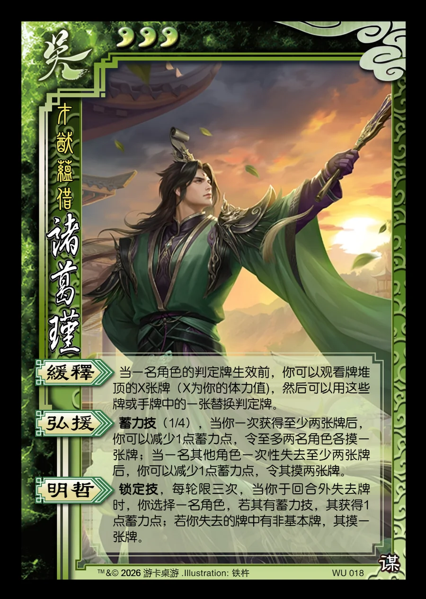

点击卡面查看大图
吴
谋诸葛瑾
♥3才猷蕴借
缓释
当一名角色的判定牌生效前，你可以观看牌堆顶的X张牌（X为你的体力值)，然后可以用这些牌或手牌中的一张替换判定牌。
弘援蓄力技
蓄力技（1/4），当你一次获得至少两张牌后，你可以减少1点蓄力点，令至多两名角色各摸一张牌；当一名其他角色一次性失去至少两张牌后，你可以减少1点蓄力点，令其摸两张牌。
明哲锁定技
锁定技，每轮限三次，当你于回合外失去牌时，你选择一名角色，若其有蓄力技，其获得1点蓄力点；若你失去的牌中有非基本牌，其摸一张牌。